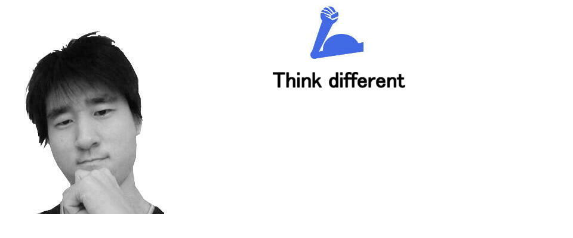
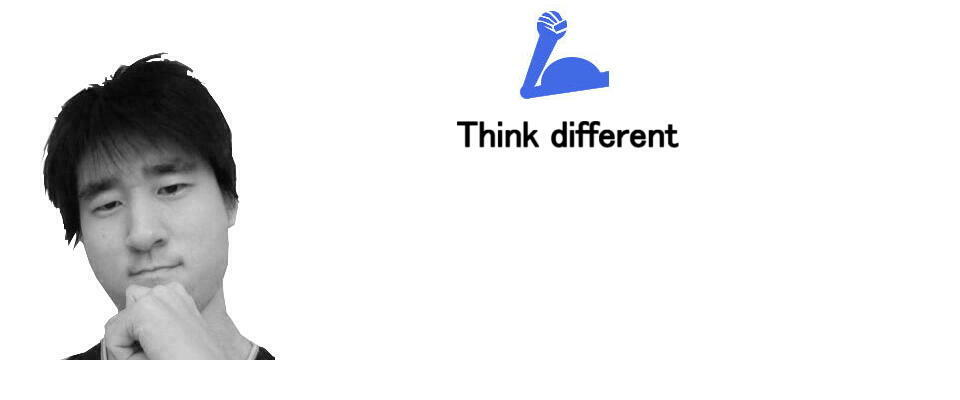

スティーブ・ジョブズの紹介
 プロフィール
プロフィール
1955年生まれ。1976年、スティーブ・ウォズニアックとともに、ホームコンピュータ「Apple I」を開発。その後「Apple II」を開発し、大ヒット。「Apple社」を設立。
1984年、「Macintosh」を発売。現在のiPhoneにも通じる「直感的な操作」はもちろん、そのCMも話題をさらう。しかし、ここでジョブズは「Macintosh」の需要予測を誤ったため、Appleが初の赤字を計上し、従業員の20%を解雇する事態になってしまい、Appleを追い出されてしまった。
しかし、彼はすぐに立ち直り、その年に教育やビジネス向けの高性能コンピューター（ワークステーション）を開発、製造する会社「NeXT」を設立。
1986年には、ルーカスフィルム社のコンピュータ・アニメーション部門を1,000万ドルで買収。これが後に「トイ・ストーリー」や「ファインディング・ニモ」などを製作するあの有名な「ピクサー」である。
2006年、「ピクサー」はディズニーに買収され、ジョブズもディズニーの役員に就任。
ジョブズがいなくなったApple社は、経営が傾き始め、次期Mac OSの技術を外部に求め始めた。
そこで、ジョブズは、「NeXT」で開発していた技術を「Apple社」に売り込み、その結果「Apple」は「NeXT」を買収。こうしてジョブズは1996年、「Apple社」に復帰した。
1998年、ジョブズはiMacを販売。それまでのPCは無骨な外見が当たり前だったが、スケルトンでデザイン性に優れたiMacは大ヒットし、「Appleの復活」を人々に印象付けた。そして、2000年、復帰以来ずっと断っていたCEO就任を受諾した。
2001年には、iPodとiTunesを発表し、音楽業界にも参入。そして、2007年、初代iPhoneを発表。
翌年iPhone 3Gを発表した時には癌の転移があり、容態は深刻であった。手術などを経て一旦は回復するも、2010年に悪化。
2011年に、ティム・クックを後任に指名し、ジョブズはCEOを辞任。
そして、10月4日、iPhone 4Sが発表された翌日に56歳という若さでこの世を去った。
彼から、クリエイターを目指す君へのメッセージ
「量より質の方が大事。二塁打2本よりも、ホームラン1本の方が価値はずっと高い。」
「何か1つのことが上手くいったら、そこにいつまでも留まらずに、別の素晴らしいことをやるべきだ。次にするべきことを見つけろ。」
「仕事は人生の大部分を占める。心からの満足を得る唯一の方法は、素晴らしいと思える仕事をすること。そして素晴らしい仕事をするには、自分がやっていることを愛することだ。それがまだ見つかっていないのなら、探し続けろ。」
「アップル社をクビになったことは、人生で起こった最高の出来事だった。成功の重さは、再び初心者になって軽くなった。自由になり、人生で一番クリエイティブな時期を過ごすことができた。」
「自身がクオリティの基準となれ。高い質を期待される環境に慣れていない者もいるのだから。」
「自分はいつか死ぬという事実を覚えておくことは、自分には失うものがあるという考えを避けるのに最良の方法である。自分は裸だ、何も持って無いと考えるのだ。そうすれば、自分の心に従うしかなくなるだろう。」
「毎朝、鏡の中の自分に問いかけてきた。「もしも今日が人生最後の日だとしたら、今日やろうとしていることをやりたいと思うだろうか？」と。NOと答える日が何日も続くようであれば、何かを変えなければならないということだ。」
「人生において、僕が気に入ってる事はお金がかからない事ばかりだ。結局、僕らが持っている一番貴重な資産は、（お金ではなく）時間なんだよ。」
「点と点は、先を見ながらは繋げない。過去を振り返ることで繋げるものだ。だからその点と点が将来繋がると、信じなければならない。自分の勇気でも、運命でも、人生でも、カルマでも、何かを信じなければならない。この方法で失敗したことはない。この方法は私の人生を変えてくれた。」
「時間は限られているのだから、誰かの人生を生きて無駄にしてはいけない。こうあるべきだという既成概念に囚われる事は、他の人間の考えに従って生きているのと同じだ。」
「他者の意見に耳を傾け過ぎて、自分の心の声がかき消されてはいけない。最も大事なのは、自分の心と直観に従う勇気を持つことだ。あなたは、すでにどうなりたいかを直感的に知っているのだから。それ以外の全ては重要ではない。」
「自分がもうすぐ死ぬという事実は、大きな決断をする手助けをしてくれる、人生で最高のツールだ。外部からの期待、プライド、恥をかいたり失敗したりすることへの怖れなど、ほとんど全てのものは死と向き合うと消え去る。そして本当に大切なものだけを残してくれるんだ。」
「シンプルにするっていうのは、複雑である事よりずっと難しいんだ。シンプルなものを生み出すには、思考をシンプルにしなければならないからだ。しかしそうする価値はある。そこに到達できれば、山をも動かせるからだ。」
「死んだ時に墓場で一番のお金持ちになりたいとは思わない。私にとって重要なのは、夜眠るときに自分たちは素晴らしいことをしたと言えることだ。」
「成功する起業家と失敗する起業家を分ける要素の半分は、純粋に忍耐力であると確信している。」
「テクノロジーは重要ではない。大事なのは、人は賢いということ、そして人を信じること。人にツールを与えれば、それを使って素晴らしいことをするだろう。」
「ただお客さんの望みを聞いて、それを与えようとしてはいけない。望みどおりのものを作る頃には、お客さんは別の新しいものを欲しがるだろう。」
「日本はとても興味深い。彼らはコピー商品を作る、と言う人もいる。私は今ではそう思わない。彼らは物を作り変えているのだ。すでに発明されている物を、完全に理解するまで研究する。時には、発明者よりも理解していることがある。」
「年配の人たちは「これは何？」と尋ねる。でも少年は「これで何ができるの？」と尋ねる。」
「革新的なことをしていると、時には過ちを犯す。ベストなのは間違いをさっさと認め、次のイノベーションの改善に取りかかること。」
「やってきたことと同じぐらい、やらなかったことにも誇りを持っている。イノベーションとは1000のことにノーと言うようなものだからだ。」
「人は脳をオフにするためにテレビを見る。そして、脳をオンにしたいときに、パソコンを使う。」
「先頭を歩く人（リーダー）と、それについていく人（フォロワー）の違いは、イノベーションを起こすかどうかだ。」
「イノベーションは、廊下での立ち話や、夜10時半に新しいアイデアを伝える電話、またはある問題についての今までの考えに穴を開けるような気づきから生まれる。」
 
